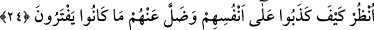
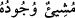

24. Gör ki, kendi aleyhlerine nasıl yalan söylediler ve (tanrı diye) uydurdukları
şeyler kendilerinden nasıl kaybolup gitti!
Ey Muhammed (a.s.), “bak, kendi kendilerini nasıl yalanladılar.” Dünyada
kendilerinden sâdır olan şirki nasıl inkâr ettiler. Onların bu yalanlamaları gerçekten
ibretâmiz bir iştir, şaşılacak bir şeydir.
“Ve uydurdukları şeyler kendilerinden nasıl kaybolup gitti.” Söyledikleri nasıl boş
çıktı, iddialarının gerçek dışı olduğu nasıl da anlaşıldı. Çünkü onlar, putların “Allah
katındaki şefaatçileri olduğu” iftirasında bulunuyorlardı. Kıyamet gününde bunun
tamamen asılsız olduğu ortaya çıkacaktır.
Yirminci âyetten buraya kadar tefsîri yapılan âyetlerde dikkat çekilmesi gereken bazı
hususlar vardır:
1. “Dileyen”, “murad eden” anlamında olmak kaydıyle Allah’a “şey” demek caizdir.
Ancak bunu “” = “varlığı dilenen” manasında kullanmak doğru değildir.
Çünkü O dileyen ve irade edendir.
2. Tevhidin akabinde Allah’ın şirkten de uzak olduğunu ikrar etmek gerekir.
Molla Ahî Çelebi Sadru’ş-şerîa hâşiyesinde şöyle der: “Bir yahudi veya hıristiyanın
müslüman olması için kelime-i şehâdeti söyledikten sonra hıristiyanlık ve yahudilikten
berî olduğunu da açıklaması şarttır. Bunlardan uzak olduğunu açıklamadığı sürece
defalarca kelime-i şehâdeti söylese de hakikatte müslüman olamaz. Ancak bu şart,
müslümanlar arasında olanlar içindir. Daru’l-harbde bir müslümanın telkini ile kelime-i
şehâdeti söyleyen veya: “Ben İslâm dînine, ya da Muhammed’in dinine girdim.” diyen
kimsenin bu sözleri, tevbe ettiğinin delili sayılır.
ed-Dürrü’l-Muhtasar’da “îmanın sıfatı” bölümünde şöyle denilmiştir: Bir kişinin
sahih îman sahibi olması ve tam mü’min sayılması için “Ben Allah’ın emrettiklerine
uymayı, yasaklarından da sakınmayı kabul ettim.” demesi yeterlidir. Ancak diliyle
söylediklerine, kalben de inanması şarttır.
İmam-ı Azam’a göre; mukallidin îmanı sahihdir. Ancak tefekkürü (nazar) ve
delillerini araştırmayı (istidlâl) terkettiği için günahkar sayılır.
Faslü’l-hitab’da şöyle denilmiştir: “Müslüman diyarında yetişen ve Allah’ın
yaratıklarını gördükçe O’nu tesbîh eden kişi, mukallid olmaktan çıkmıştır.
3. “Oğullarını tanıdıkları gibi tanırlar.” âyeti ile işaret olunan mana şudur: Onlar
kendilerinin, oğullarının kaynağı ve oğullarının varlığının başlangıcı olduklarına kesin
olarak inanmışlardır. Keza mârifet ehli de Allah Teâlâ’nın kendilerinin yaratılışlarının
kaynağı ve varoluşlarının başlangıcı olduğunu kesin olarak bilir ve inanırlar.
Hâfız, şöyle der: